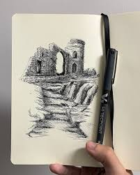

Welcome to the Art of Sketching
Pen and Ink Sketching
Overview: Pen and ink sketching involves creating clean and precise drawings using ink pens. This
technique emphasizes lines, patterns, and textures.
Tools:
- Fine-tip pens (Micron, gel, or fountain pens)
- Brush pens
- Inking paper
Techniques:
- Line Art: Create outlines and detailed designs.
- Stippling: Use dots to build texture and shading.
- Hatching: Build depth with parallel and intersecting lines.
Applications:
- Illustrations
- Architectural designs
- Comic art
Tips:
- Experiment with line thickness for dynamic sketches.
- Use high-quality paper to prevent ink bleeding.
